Roles Partner and VP of Product Design, THANK YOU Studio, 2012 to 2015. Senior Director of UX Design, Nokia, 2009 to 2012. Creative Director, Adobe, 2006 to 2009.
Team Studios in San Francisco and Copenhagen. At Nokia, about 35 people across five cities.
Work Kindle Fire launch and Fire Phone design system for Amazon. Toyota in-car navigation. MeeGo OS design system and third-party app guidelines. Adobe.com redesign.
At THANK YOU, we conceived a unique design system for Amazon’s Fire Phone. It took advantage of the device’s 3D interface where depth offered real advantages, and used the best of flat design everywhere else, so the 3D moments stood out. Reel, sound on.
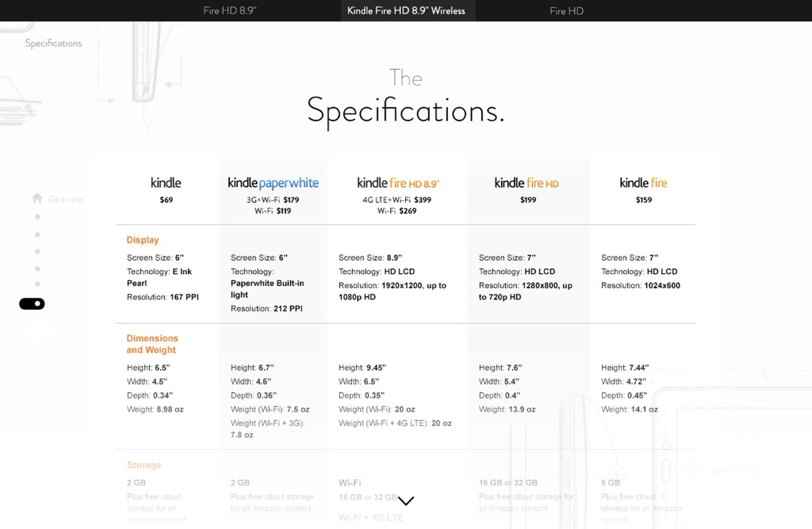
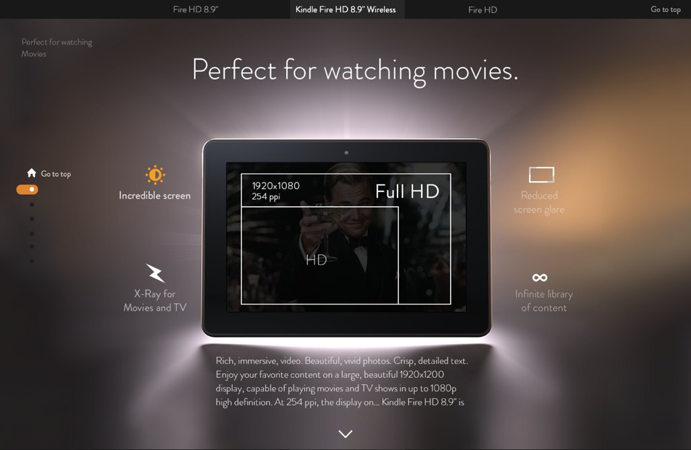
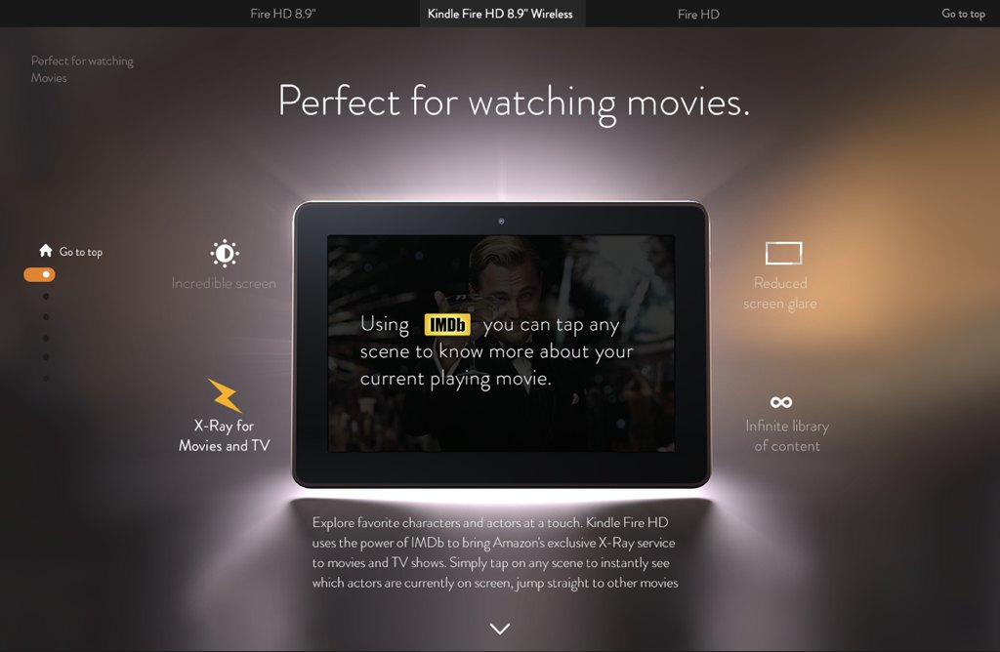
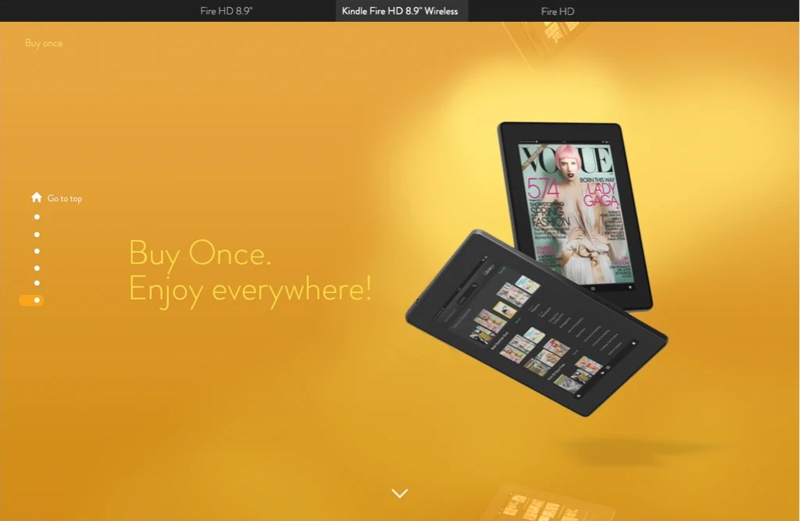
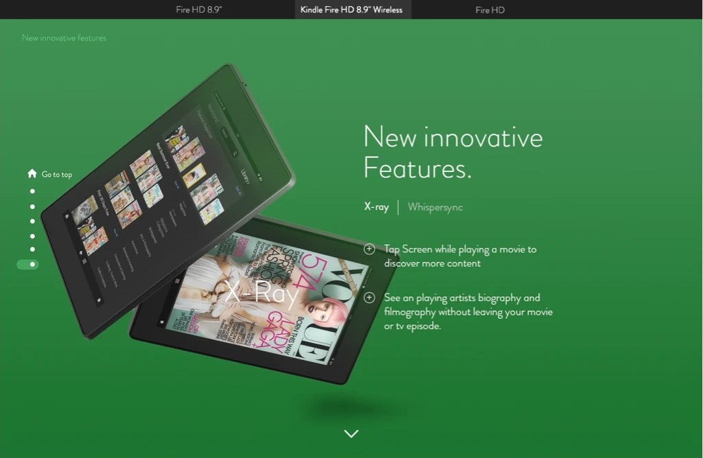
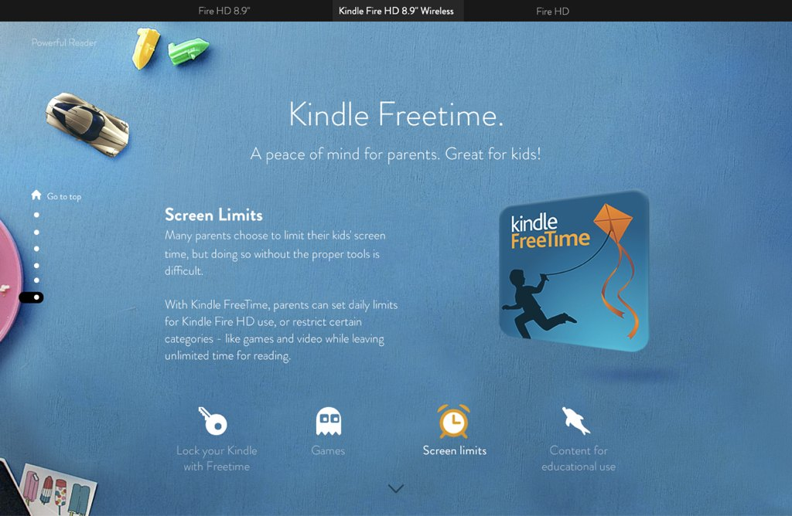
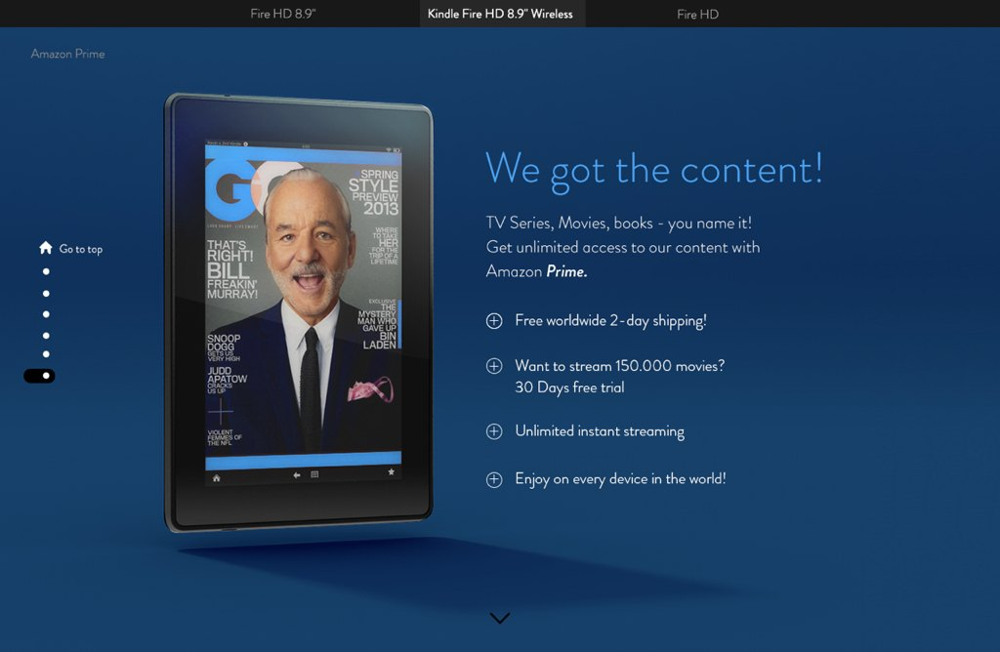
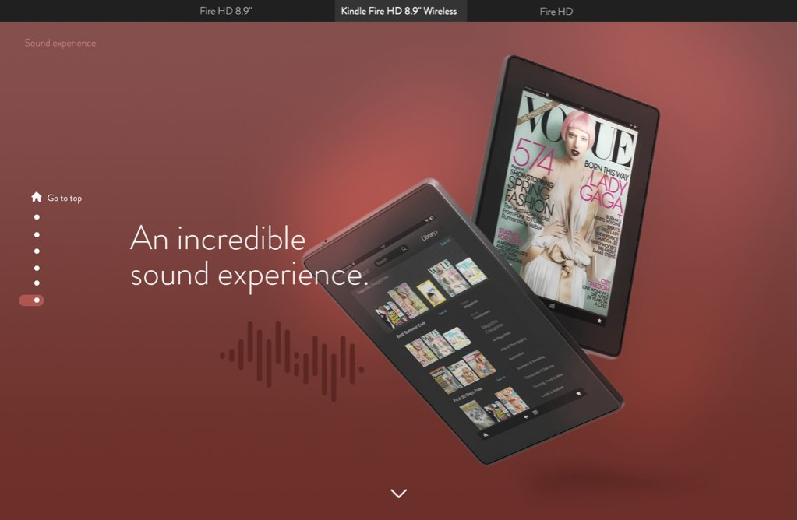
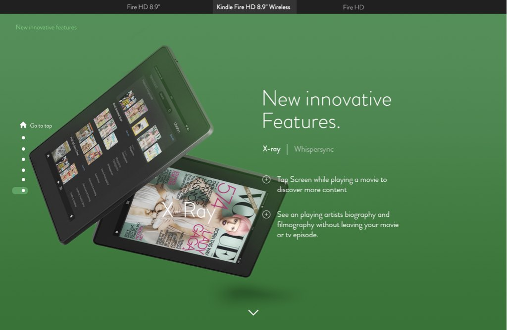
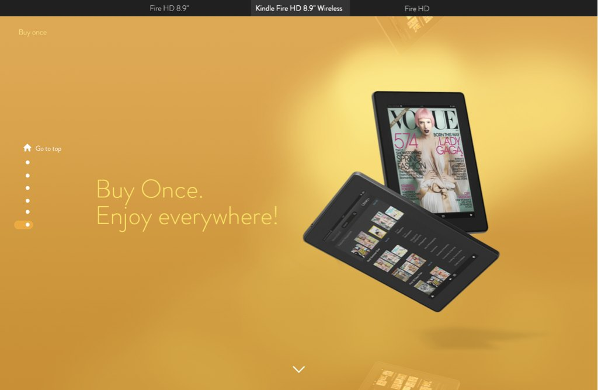
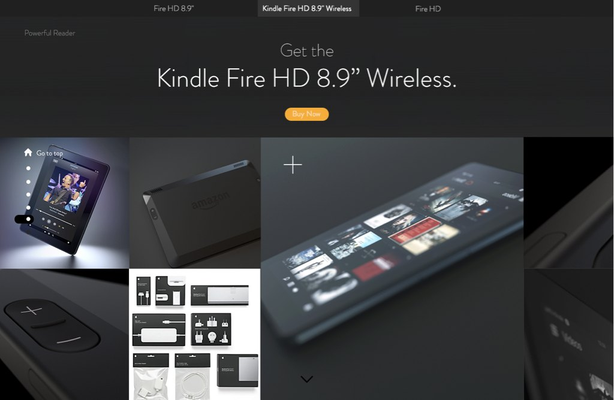
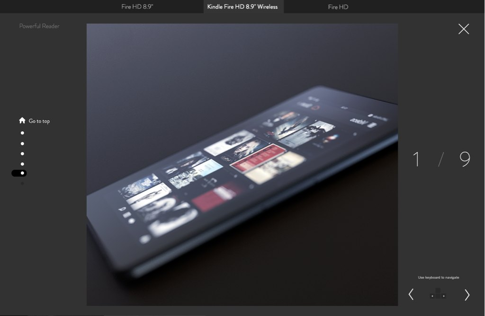
Three sizes of Kindle Fire HD, one launch site built to show the hardware and the differences between them. Minimal copy let the devices and the Kindle graphics shine, and our rigged and lit 3D scenes let Amazon re-shoot every size for any format. THANK YOU Studio, 2012.
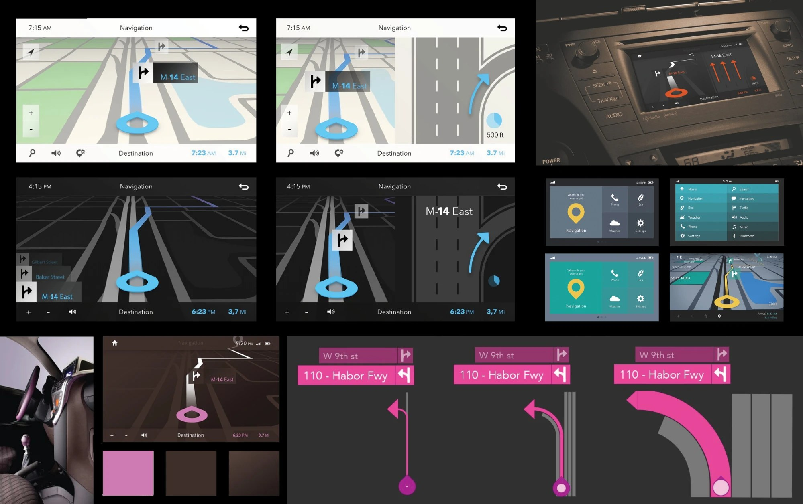
Design explorations for Toyota's native in-car navigation system. THANK YOU Studio.
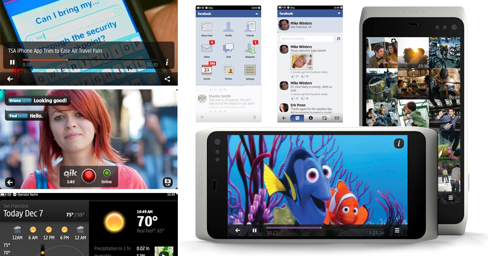
At Nokia, one focus of my team was the creation of 3rd-party app reference designs for the N9 in the debut of the innovative MeeGo OS. (pictured: Associated Press, Qik, AccuWeather, and Facebook)
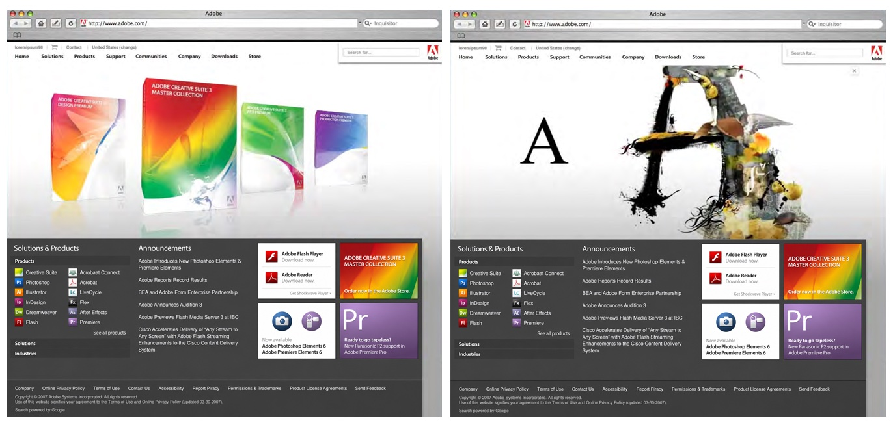
Creative Suite 3 was a merger of Macromedia and Adobe brands under one roof, so the site underwent a radical transformation to showcase the new look, and provide more content space to celebrate the creative expression of the tools.
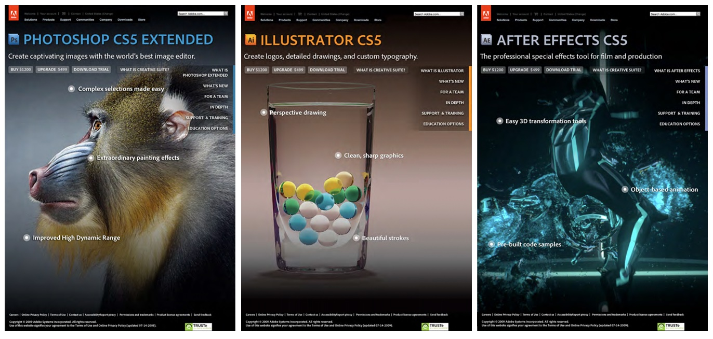
By CS5, we were pushing beyond the concept of a web page, introducing immersive landing screens with layers, motion and highly interactive UI to allow visitors to play with the tools.